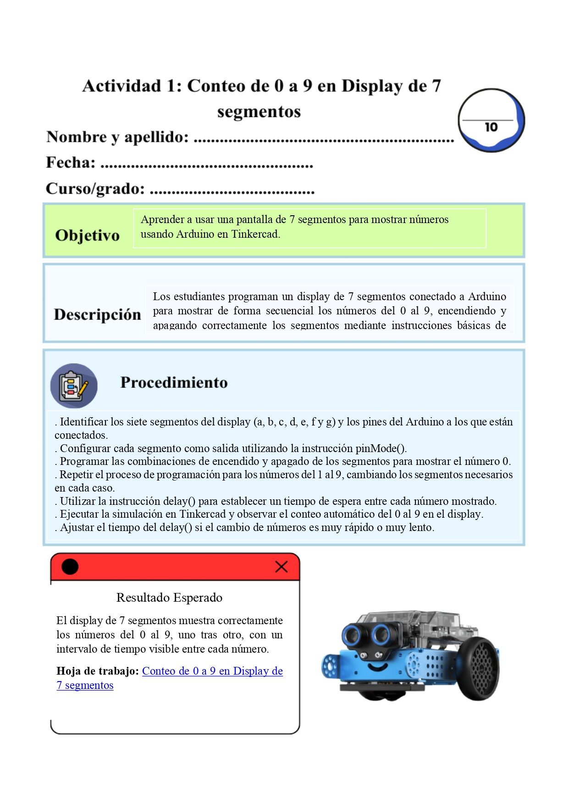
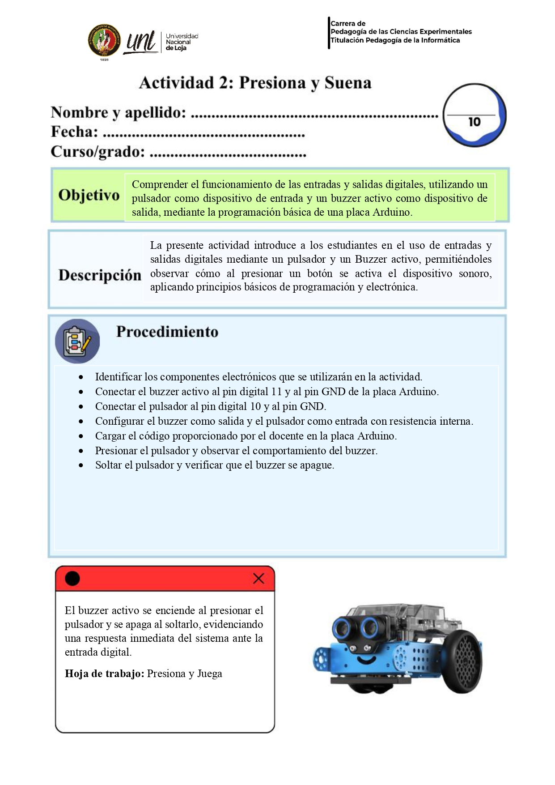

Descripción actividad 1
En esta actividad, los estudiantes trabajarán en la plataforma Tinkercad para aprender cómo funciona un display de 7 segmentos, un componente electrónico que permite mostrar números usando luces. A través de la simulación, los estudiantes conectarán el display al Arduino Uno y programarán el encendido y apagado de sus segmentos para representar los números del 0 al 9. Esta actividad les permitirá comprender cómo las combinaciones de luces forman diferentes números y desarrollar habilidades básicas de programación y pensamiento lógico de manera práctica y divertida.
Actividad: Tema 1

Actividad 2
Estimados estudiantes resuelvan la siguiente actividad, que permitirá entender como un botón puede encender un buzzer, relacionando una acción física con una respuesta electrónica.
